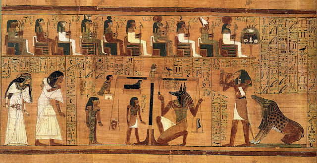

Culture & Traditions
- Festivals: Major holidays in Egypt include Eid al-Fitr, Eid al-Adha, and Revolution Day on July 23rd.
- Traditional Foods: Popular dishes include falafel (taameya), koshari, and molokhia (a leafy green stew).
- Traditional Clothing: The galabeya and traditional dresses are commonly worn by Egyptians for special occasions.
History & Heritage
- Pharaohs: The ancient Egyptian civilization, famous for constructing the pyramids and massive temples, like Abu Simbel in Aswan.
- Islamic Egypt: Egypt also boasts many historical Islamic landmarks, such as the Al-Azhar Mosque and the Mosque of Muhammad Ali.
- Christian Egypt: Egypt is home to significant Christian landmarks, including the Hanging Church in Cairo.